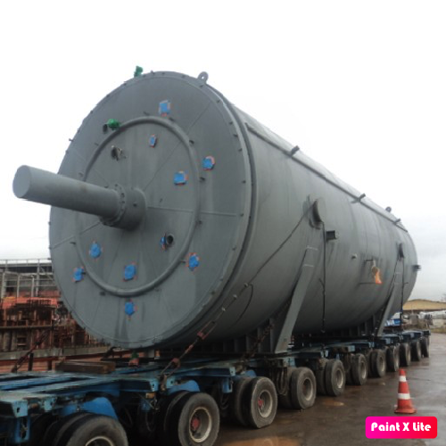
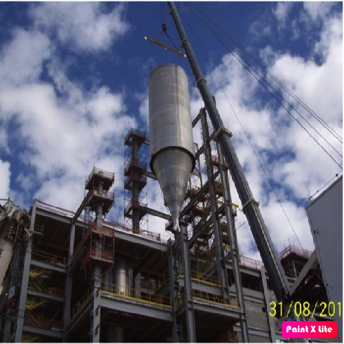

Visão Geral do Projeto
A Petroquímica Suape implantou três grandes unidades industriais: PTA, POY e PET, com investimentos superiores a R$ 9 bilhões. A planta de PTA (ácido tereftálico purificado) tem capacidade de 700 mil t/ano; POY, 240 mil t/ano; e PET, 450 mil t/ano — bases para a indústria têxtil e de embalagens do Brasil.
Participação de Alex Cerqueira
Atuei como engenheiro de planejamento industrial durante a fase de montagem e comissionamento das plantas POY e PET. Minhas principais responsabilidades incluíram:
- Criação e controle de cronogramas físicos e financeiros.
- Coordenação de suprimentos e integração entre disciplinas (mecânica, elétrica, instrumentação).
- Planejamento de montagem de grandes equipamentos como silos, reatores e chillers.
- Elaboração de relatórios gerenciais para a diretoria e acompanhamento diário de campo.
Soluções Aplicadas
- Integração Lean de atividades de montagem com planejamento de engenharia.
- Uso de cronogramas multi-nível para controle detalhado de frentes de serviço.
- Planejamento logístico para içamentos especiais (reatores de até 220 toneladas e silos de 60t).
- Mitigação de riscos de obra por sobreposição de frentes e uso de acessos otimizados.
Destaques Técnicos do Projeto
| Equipamento | Quantidade / Peso | Observações |
|---|---|---|
| Reatores PET | 220t cada | Erguidos com guindastes MONITOWOC 18000 |
| Silos POY/PET | 30m altura / 60t | Movimentação com LTM 11200 (1200t) |
| Chillers TRANE | 42t | Instalados com pórtico Saraiva 200t |
| Bombas, Compressores, Vasos | Centenas | Montagem simultânea em linhas A/B/C |
Galeria do Projeto
|  |  |
| Montagem de reator da Linha B da planta de Pet | Silos de Pet - 30 m de altura e 160 ton |